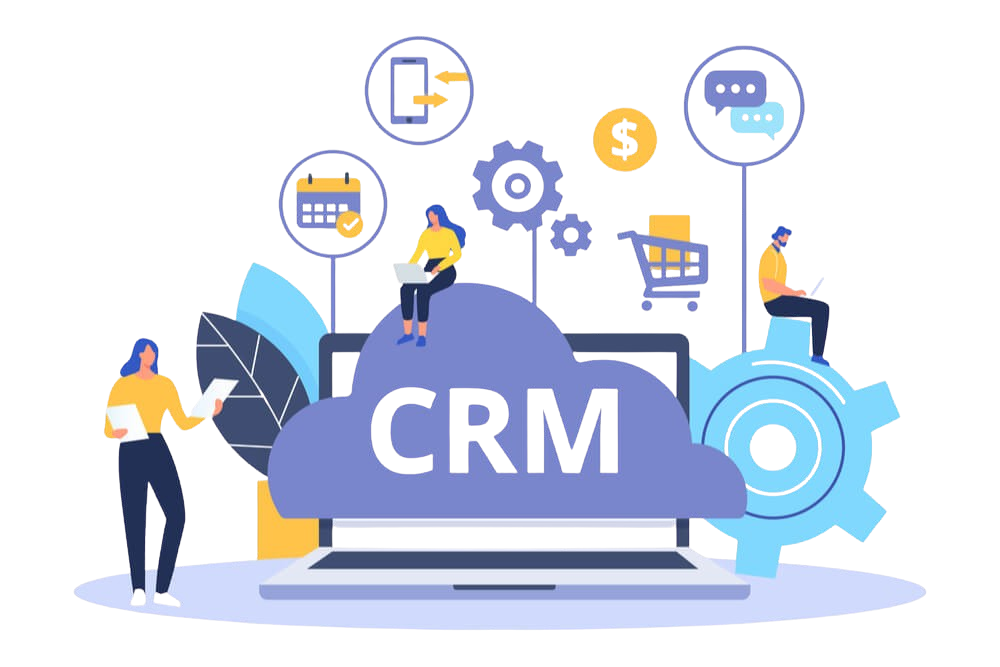

Principais ferramentas do CRM

Um CRM de vendas é uma ferramenta para gerenciar todos os contatos e o relacionamento com clientes ou prospects no processo de vendas. O CRM de vendas tem, como principal objetivo, desenvolver experiências de qualidade com clientes, além de garantir a satisfação e conquistar sua fidelidade. Com uma ferramenta de CRM, a gestão do relacionamento com os clientes facilita a interação com os consumidores e auxilia no atendimento personalizado. O software rastreia a comunicação, organiza automaticamente os dados do cliente, envia lembretes para acompanhar leads e muito mais.
Principais ferramentas:
Zendesk Sell CRM
O Zendesk Sell é um CRM de vendas completo com soluções para maximizar a produtividade, a visibilidade do pipeline e a receita das equipes comerciais. Com mais de 125 mil clientes mundo afora, o Zendesk Sell facilita o trabalho da sua equipe de vendas para focar nos leads e ofertas de maior valor. Assim, é possível criar e gerenciar um funil de vendas que esteja alinhado aos seus negócios, priorizando os clientes atuais e em potencial. Com a análise CRM que a ferramenta oferece, visualizar e monitorar os dados também fica muito mais simples, com detalhes que permitem otimizar o processo de vendas em tempo real.
- Modelos, automação e rastreamento de e-mails;
- Relatórios de atividades e análise;
- Discador nativo para “clicar e ligar”;
- Scripts e observações;
- Envio de mensagens de texto;
- Relatórios e análises de chamadas;
- Listas segmentadas de clientes em potencial;
- + de 20 tipos de gráficos para análise de dados;
- Download de dados em CSV, Excel, PDF ou imagem;
- Aplicativos e integrações com outras ferramentas;
- Pontuação de leads (lead scoring) e oportunidades de vendas;
- Metas e previsões de vendas;
- CRM para dispositivos móveis.
Recursos da Zendesk Sell:
Os planos e preços do Zendesk Sell dependem dos recursos que sua empresa precisa. As principais opções são: Sell Team: US$ 19 usuário/mês (cobrado anualmente) Sell Growth: US$ 49 por usuário/mês (cobrado anualmente) Suite Enterprise: US$ 99 por usuário/mês (cobrado anualmente) Para grandes empresas, a Zendesk também oferece um plano chamado Sell Elite, no qual pode-se personalizar detalhadamente a ferramenta com acesso ilimitado à API e suporte prático, a partir de US$199 por usuário, por mês.
Moskit
Um dos diferenciais do CRM de vendas Moskit está no recurso especial de vender pelo WhatsApp. É possível melhorar o atendimento e a produtividade de vendas integrando WhatsApp e CRM, e utilizando modelos de mensagens diretamente no aplicativo de comunicação mais utilizado no Brasil. Além disso, o Moskit conta com recursos para automatizar o funil de vendas, diminuindo a necessidade de realização de tarefas manuais, e também a possibilidade de prospectar diretamente pelo CRM com o envio de e-mails automatizados.
- Automação do funil de vendas;
- Gestão de projetos;
- Módulo de produtos;
- Geração de propostas comerciais;
- Integração com o WhatsApp;
- Playbook de vendas automatizado;
- Relatórios avançados;
- Inteligência artificial para criação de mensagens e e-mails.
Recursos do Moskit CRM:
O Moskit oferece um único plano com o valor de R$59 por usuário/mês quando o contrato é anual, e R$69 por usuário por mês se o contrato for mensal. No entanto, a plataforma também conta com serviços personalizados cobrados separadamente, como Onboarding, Engage, Blueprint e Blueprint Pro.
Agendor
O Agendor é um sistema CRM brasileiro focado principalmente em vendas consultivas B2B. Trata-se de uma central de gestão que oferece visão e domínio completos do que você deseja buscar dentro de todo seu processo comercial. É um CRM para pequenas e médias empresas com o objetivo de diminuir o desperdício de oportunidades com funções que automatizam as etapas das vendas. A curva de aprendizado da ferramenta é relativamente simples, o que permite implementá-la de forma rápida nas equipes. A plataforma CRM do Agendor é indicada também para empresas com times de vendas mistos, ou seja, com vendedores internos e externos
Recursos do Agendor:
Além da sua versão gratuita com limitações, o Agendor tem apenas o plano Pro com direito de usar todas as funcionalidades da plataforma CRM. O valor é de R$196 por mês para 4 usuários, sendo R$49 por mês a mais por cada usuário adicional.
Sales Cloud - Salesforce CRM
O CRM da Salesforce, chamado de Sales Cloud, se destaca entre as plataformas do mercado. Destinada a médias e grandes empresas, conta com um alto número de funcionalidades para ajudar nas previsões de vendas, interações com clientes e desempenho do time comercial. O software conta com sistema de alertas, automatização de tarefas e também auxilia na gestão da equipe de marketing e no atendimento ao cliente. Sua função de comunicação interna é um ponto positivo para os representantes de vendas.
Recursos da Sales Cloud:
Os planos do CRM da Salesforce se dividem em: Essentials: R$ 175 por usuário/mês (cobrado anualmente); Sales Professional: R$ 525 por usuário/mês (cobrado anualmente); Enterprise: R$ 1.050 por usuário/mês (cobrado anualmente); Unlimited: R$2.100 por usuário/mês (cobrado anualmente).
Ploomes
Para vendas complexas e mais longas, o CRM Ploomes é uma solução que visa organizar toda a área comercial ao gerenciar clientes e oportunidades de forma intuitiva e fácil. A plataforma é 100% personalizável e se concentra em melhorar a produtividade dos vendedores ao mesmo tempo em que auxilia os gestores a obterem uma visão ampla dos negócios. Uma de suas principais características é a facilidade em implementar integrações com softwares ERP. Outras funcionalidades que se destacam são as automações de propostas comerciais com cálculo de impostos e a gestão de funis de vendas mais complexos.
Recursos do Ploomes:
O software de CRM Ploomes oferece um plano de entrada único com as funcionalidades básicas do sistema. O valor do plano básico é de R$195,00 por mês para 3 usuários. Porém, é possível adicionar recursos extras, como gerenciamento de processos, automação de propostas, biblioteca de arquivos e outros por valores à parte. Também existem serviços sob demanda para uma melhor experiência e obtenção de resultados com a plataforma.